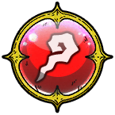

| Lv: | 150 |
|---|---|
| HP: | |
| MP: | |
| ATK: | |
| DEF: | |
| AGL: | |
| WIS: | |
| Move: | |
| Weight: | 50 |
| Weaknesses: | |
/ | |
|
|
|---|---|---|---|---|---|
| Resistances: | |
|
/ | |
|
| Immunities: |
| Family: | Role: | Element: |  |
|---|
Note: All perks/abilities denoted with an * are using unofficial translations
| Abilities | ||||||
|---|---|---|---|---|---|---|
| Level | Type | Name | MP | Element | Range | Description |
| 1 |  |
Slime Enhancement* スライムエンハンス |
45 |  |
 1-3 (incl. self) |
Raises Slime Enhancement of all Slime allies in area of effect for 4 turns |
| 33 |  |
Black Cross* ブラッククロス |
138 |  |
 2-4 |
Deals major Zam-type spell damage to all enemies in area of effect, ignores some Light Damage Res |
| 54 |  |
Grandpa Beam* グランビーム |
127 |  |
 Fan (Long) |
Deals major surehit Woosh-type martial damage (259 base potency) to all enemies in area of effect |
| Base Perks | ||
|---|---|---|
| Level | Name | Description |
| 1 | Max HP +30 | Raises max HP by 30 |
| 1 | Max MP +15 | Raises max MP by 15 |
| 1 | Grandpa Shield* グランシールド |
Battle start: Enables Grandpa Shield for 3 turns When a unit is in the Grandpa Shield state, the unit's Typeless resistance is raised by 50%, its Frizz, Sizz, Crack, Woosh, and Zam resistances are raised by 25%, staus ailment resistances are all raised by 25%, and any damage taken is reduced by 30% |
| 1 | Abyss Only Slime Elemental Potency +50%* 深淵限定スライム系全属性威力+50% |
When challenging a Slime stage within the Calamitous Abyss: Raises Slime Frizz-type, Sizz-type, Crack-type, Woosh-type, Bang-type, Zap-type, and Zam-type potency by 50% This perk activates even when the unit is not in the party |
| 110, 120, 130, 140 | Grandpa Beam* potency +2% | Raises Grandpa Beam* potency by 2% |
| 150 | Ability Potency/Recovery +2% | Raises ability potency/recovery by 2% |
| Awakening Perks | ||
|---|---|---|
| Awakening | Name | Description |
| 1 | Elder Slime* スライムの大長老 |
Battle start: Raises Spell and Martial Boost for 2 turns Turn 3 action start: Greatly raises Spell and Martial Boost for 2 turns Turn 6 action start: Massively raises Spell and Martial Boost for 2 turns Turn 9 action start: Raises Spell and Martial Boost by 4 stages for 2 turns |
| 2 | Bang Res +25 | Raises Bang resistance by 25 |
| 3 | Desperate Light Grandpa Beam* どとうのライトグランビーム |
When making a spell or martial attack: Attacks with Light Grandpa Beam* if enemy is within long fan-shaped area, up to 2 times per battle (Light Grandpa Beam*: Deals major surehit Woosh-type martial damage (225 base potency) to all enemies in area of effect) |
| 3, 5 | Grandpa Beam* potency +5% | Raises Grandpa Beam* potency by 5% |
| 4 | Zap Res +25 | Raises Zap resistance by 25 |
| 5 | Spell & Martial Tricks* 呪文と体技のコツ |
Lowers spell and martial ability MP cost by 10%, raises potency and recovery by 10% |
| 1, 2, 3, 4, 5 | Stats Up | Raises HP, MP, ATK, DEF, WIS and AGL by 5% |
| 1, 2, 3, 4, 5 | Abyss Only Slime Elemental Potency +10%* 深淵限定スライム系全属性威力+10% |
When challenging an Slime stage within the Calamitous Abyss: Raises Slime Frizz-type, Sizz-type, Crack-type, Woosh-type, Bang-type, Zap-type, and Zam-type potency by 10% This perk activates even when the unit is not in the party |